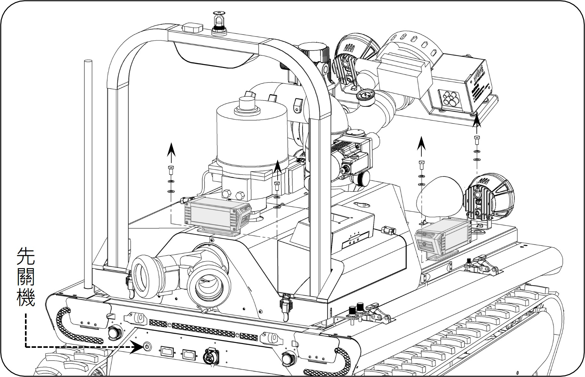
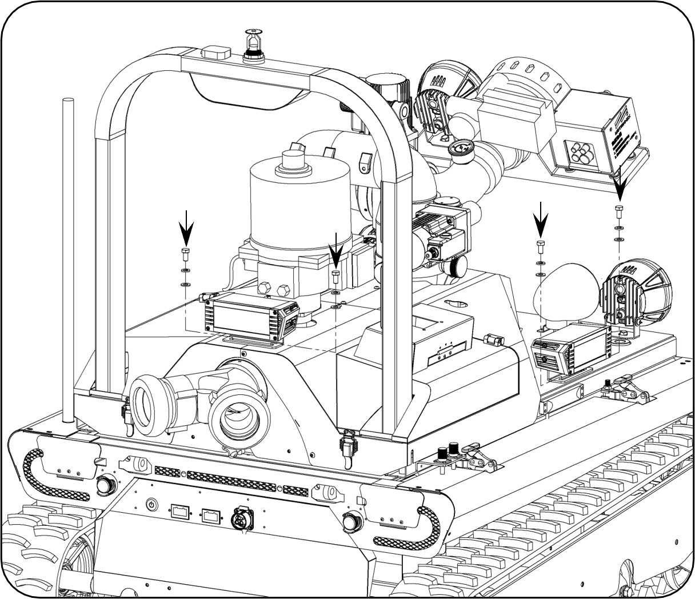

步驟一：外部組件拆卸
1. 使用六角板手將右半邊鈑金拆卸，並將右側天線轉鬆拆除。
2. 先將機器人電源關機，使用開口板手將機器人右側方燈及後方方燈拆卸。
工具：開口板手 ║ 零件：［外六角螺絲M8x16、彈簧華司M8、平華司M8］*4
工具：六角板手 ║ 零件：［半圓頭內六角螺絲M5x10］*11

圖 1：方燈與螺絲位置 (先關機)
步驟二：盒體拆卸與線路更換
1. 看到IO控制盒依序將線拔除。
2. 使用六角板手將舊的IO控制盒及底座拆卸下來。
3. 將新的IO控制盒及底座裝上，再依序將線照著控制盒外面貼紙接上。
工具：六角板手 ║ 零件：［半圓頭內六角螺絲M6x10 、彈簧華司M6、平華司M6 ］*4
步驟三：回裝與完工測試
1. 將鈑金及方燈裝回（參考步驟2 → 步驟1）。
2. 測試五用氣體及手機是否正常充電。
3. 確認熱顯像儀燈號（藍、黃），可見光燈號（紅），動作確認完即可完成維修。

圖 7：影像與燈號動作確認